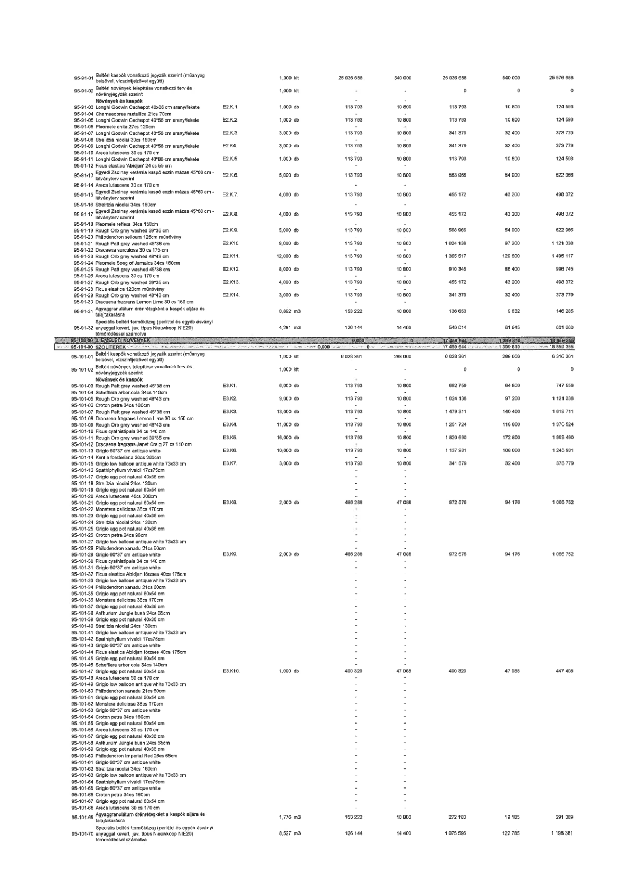

| Tétel | Menny. | Egys. | Anyag e.ár (net HUF) | Díj e.ár (net HUF) | Anyag összesen (net HUF) | Díj összesen (net HUF) | Anyag+Díj összesen (net HUF) |
|---|---|---|---|---|---|---|---|
| 95-91-01 Beltéri kaspók vonatkozó jegyzék szerint (műanyag belsővel, vízszintjelzővel együtt) | 1,000 | klt | 25 036 688 | 540 000 | 25 036 688 | 540 000 | 25 576 688 |
| 95-91-02 Beltéri növények telepítése vonatkozó terv és növényjegyzék szerint | 1,000 | klt | 0 | 0 | 0 | 0 | 0 |
| 95-91-03 Longhi Godwin Cachepot 40x86 cm arany/fekete | 1,000 | db | 113 793 | 10 800 | 113 793 | 10 800 | 124 593 |
| 95-91-04 Chamaedorea metallica 21cs 70cm | 0 | db | 0 | 0 | 0 | 0 | 0 |
| 95-91-05 Longhi Godwin Cachepot 40*56 cm arany/fekete | 1,000 | db | 113 793 | 10 800 | 113 793 | 10 800 | 124 593 |
| 95-91-06 Pleomele anita 27cs 120cm | 0 | db | 0 | 0 | 0 | 0 | 0 |
| 95-91-07 Longhi Godwin Cachepot 40*56 cm arany/fekete | 3,000 | db | 113 793 | 10 800 | 341 379 | 32 400 | 373 779 |
| 95-91-08 Strelitzia nicolai 30cs 160cm | 0 | db | 0 | 0 | 0 | 0 | 0 |
| 95-91-09 Longhi Godwin Cachepot 40*56 cm arany/fekete | 3,000 | db | 113 793 | 10 800 | 341 379 | 32 400 | 373 779 |
| 95-91-10 Areca lutescens 30 cs 170 cm | 0 | db | 0 | 0 | 0 | 0 | 0 |
| 95-91-11 Longhi Godwin Cachepot 40*86 cm arany/fekete | 1,000 | db | 113 793 | 10 800 | 113 793 | 10 800 | 124 593 |
| 95-91-12 Ficus elastica 'Abidjan' 24 cs 55 cm | 0 | db | 0 | 0 | 0 | 0 | 0 |
| 95-91-13 Egyedi Zsolnay kerámia kaspó eozin mázas 45*60 cm - látványterv szerint | 5,000 | db | 113 793 | 10 800 | 568 966 | 54 000 | 622 966 |
| 95-91-14 Areca lutescens 30 cs 170 cm | 0 | db | 0 | 0 | 0 | 0 | 0 |
| 95-91-15 Egyedi Zsolnay kerámia kaspó eozin mázas 45*60 cm - látványterv szerint | 4,000 | db | 113 793 | 10 800 | 455 172 | 43 200 | 498 372 |
| 95-91-16 Strelitzia nicolai 34cs 160cm | 0 | db | 0 | 0 | 0 | 0 | 0 |
| 95-91-17 Egyedi Zsolnay kerámia kaspó eozin mázas 45*60 cm - látványterv szerint | 4,000 | db | 113 793 | 10 800 | 455 172 | 43 200 | 498 372 |
| 95-91-18 Pleomele reflexa 34cs 150cm | 0 | db | 0 | 0 | 0 | 0 | 0 |
| 95-91-19 Rough Orb grey washed 39*35 cm | 5,000 | db | 113 793 | 10 800 | 568 966 | 54 000 | 622 966 |
| 95-91-20 Philodendron selloum 125cm műnövény | 0 | db | 0 | 0 | 0 | 0 | 0 |
| 95-91-21 Rough Orb grey washed 45*38 cm | 9,000 | db | 113 793 | 10 800 | 1 024 138 | 97 200 | 1 121 338 |
| 95-91-22 Dracaena surculosa 30 cs 175 cm | 0 | db | 0 | 0 | 0 | 0 | 0 |
| 95-91-23 Rough Orb grey washed 48*43 cm | 12,000 | db | 113 793 | 10 800 | 1 365 517 | 129 600 | 1 495 117 |
| 95-91-24 Pleomele Song of Jamaica 34cs 160cm | 0 | db | 0 | 0 | 0 | 0 | 0 |
| 95-91-25 Rough Patt grey washed 45*38 cm | 8,000 | db | 113 793 | 10 800 | 910 345 | 86 400 | 996 745 |
| 95-91-26 Areca lutescens 30 cs 170 cm | 0 | db | 0 | 0 | 0 | 0 | 0 |
| 95-91-27 Rough Orb grey washed 39*35 cm | 4,000 | db | 113 793 | 10 800 | 455 172 | 43 200 | 498 372 |
| 95-91-28 Ficus elastica 120cm műnövény | 0 | db | 0 | 0 | 0 | 0 | 0 |
| 95-91-29 Rough Orb grey washed 48*43 cm | 3,000 | db | 113 793 | 10 800 | 341 379 | 32 400 | 373 779 |
| 95-91-30 Dracaena fragrans Lemon Lime 30 cs 150 cm | 0 | db | 0 | 0 | 0 | 0 | 0 |
| 95-91-31 Agyaggranulátum drénrétegként a kaspók aljára és talajtakarásra | 0,892 | m3 | 153 222 | 10 800 | 136 653 | 9 632 | 146 285 |
| 95-91-32 Speciális beltéri termőközeg (perlittel és egyéb ásványi anyaggal kevert, jav. típus Nieuwkoop NIE20) tömörödéssel számolva | 4,281 | m3 | 126 144 | 14 400 | 540 014 | 61 645 | 601 660 |
| 95-101-01 Beltéri kaspók vonatkozó jegyzék szerint (műanyag belsővel, vízszintjelzővel együtt) | 1,000 | klt | 6 028 361 | 288 000 | 6 028 361 | 288 000 | 6 316 361 |
| 95-101-02 Beltéri növények telepítése vonatkozó terv és növényjegyzék szerint | 1,000 | klt | 0 | 0 | 0 | 0 | 0 |
| 95-101-03 Rough Patt grey washed 45*38 cm | 6,000 | db | 113 793 | 10 800 | 682 759 | 64 800 | 747 559 |
| 95-101-04 Schefflera arboricola 34cs 140cm | 0 | db | 0 | 0 | 0 | 0 | 0 |
| 95-101-05 Rough Orb grey washed 48*43 cm | 9,000 | db | 113 793 | 10 800 | 1 024 138 | 97 200 | 1 121 338 |
| 95-101-06 Croton petra 34cs 160cm | 0 | db | 0 | 0 | 0 | 0 | 0 |
| 95-101-07 Rough Patt grey washed 45*38 cm | 13,000 | db | 113 793 | 10 800 | 1 479 311 | 140 400 | 1 619 711 |
| 95-101-08 Dracaena fragrans Lemon Lime 30 cs 150 cm | 0 | db | 0 | 0 | 0 | 0 | 0 |
| 95-101-09 Rough Orb grey washed 48*43 cm | 11,000 | db | 113 793 | 10 800 | 1 251 724 | 118 800 | 1 370 524 |
| 95-101-10 Ficus cyathistipula 34 cs 140 cm | 0 | db | 0 | 0 | 0 | 0 | 0 |
| 95-101-11 Rough Orb grey washed 39*35 cm | 16,000 | db | 113 793 | 10 800 | 1 820 690 | 172 800 | 1 993 490 |
| 95-101-12 Dracaena fragrans Janet Craig 27 cs 110 cm | 0 | db | 0 | 0 | 0 | 0 | 0 |
| 95-101-13 Grigio 60*37 cm antique white | 10,000 | db | 113 793 | 10 800 | 1 137 931 | 108 000 | 1 245 931 |
| 95-101-14 Kentia forsteriana 30cs 200cm | 0 | db | 0 | 0 | 0 | 0 | 0 |
| 95-101-15 Grigio low balloon antique white 73x33 cm | 3,000 | db | 113 793 | 10 800 | 341 379 | 32 400 | 373 779 |
| 95-101-16 Spathiphyllum vivaldi 17cs75cm | 0 | db | 0 | 0 | 0 | 0 | 0 |
| 95-101-21 Grigio egg pot natural 40x36 cm | 2,000 | db | 486 288 | 47 088 | 972 576 | 94 176 | 1 066 752 |
| 95-101-22 Monstera deliciosa 38cs 170cm | 0 | db | 0 | 0 | 0 | 0 | 0 |
| 95-101-29 Grigio 60*37 cm antique white | 2,000 | db | 486 288 | 47 088 | 972 576 | 94 176 | 1 066 752 |
| 95-101-30 Ficus cyathistipula 34 cs 140 cm | 0 | db | 0 | 0 | 0 | 0 | 0 |
| 95-101-47 Grigio egg pot natural 60x54 cm | 1,000 | db | 400 320 | 47 088 | 400 320 | 47 088 | 447 408 |
| 95-101-48 Areca lutescens 30 cs 170 cm | 0 | db | 0 | 0 | 0 | 0 | 0 |
| 95-101-69 Agyaggranulátum drénrétegként a kaspók aljára és talajtakarásra | 1,776 | m3 | 153 222 | 10 800 | 272 183 | 19 185 | 291 369 |
| 95-101-70 Speciális beltéri termőközeg (perlittel és egyéb ásványi anyaggal kevert, jav. típus Nieuwkoop NIE20) tömörödéssel számolva | 8,527 | m3 | 126 144 | 14 400 | 1 075 596 | 122 785 | 1 198 381 |
